Projet d'examen
MC Créations de Mamie
Le projet vise à offrir à MC Créations de Mamie une présence professionnelle complète, capable de refléter la qualité artisanale de son travail et de soutenir son activité locale. L'objectif est de lui fournir des outils simples, harmonieux et durables, qui mettent en avant son univers tout en l'aidant à développer sa communication et sa notoriété.
Personas
Christine, 64 ans
Institutrice retraitée
« J'aime créer un lien avec les créatrices, et pouvoir me faire plaisir en soutenant l'artisanat local. »
- Aime comprendre et en savoir plus sur les processus de création avant d'effectuer un achat.
- N'est pas à l'aise avec le digital, a besoin d'une expérience simple et intuitive sur mobile.
Isabelle, 52 ans
Sophrologue
« J'aime valoriser le savoir-faire des petits créateurs et trouver des accessoires uniques. »
- Besoin d'être rassurée sur l'authenticité et la durabilité d'un produit avant de l'acheter.
- Souhaite pouvoir visualiser les créations dans un univers cohérent et esthétique.
Moodboard
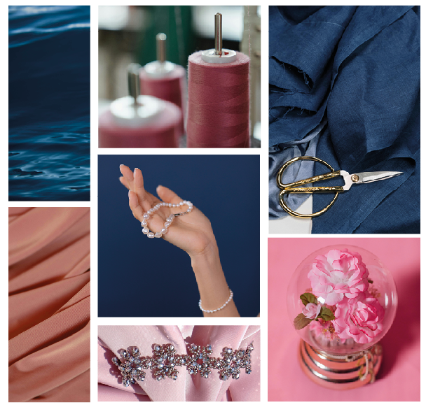
Palette de couleurs
La palette de couleurs a été sélectionnée soigneusement afin de refléter l'élégance, la modernité, et la douceur de la marque. L'association de ces couleurs offre une ambiance chaleureuse et accueillante.
Logo
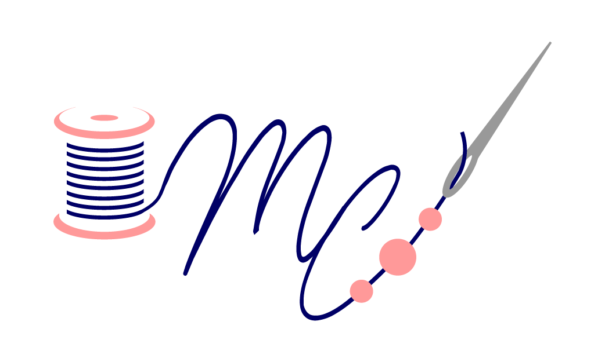
Le logo réunit plusieurs éléments symboliques qui reflètent l'univers artisanal et polyvalent de la marque.
- La bobine de fil représente à la fois la confection des bijoux et la création de sacs. Elle incarne le geste, la patience, et le savoir-faire manuel au cœur de l'activité de la créatrice.
- Les initiales M.C reprennent en partie le nom de l'entreprise. Elles sont directement tracées par le fil de la bobine, créant un mouvement fluide et continu.
- Les perles enfilées viennent rappeler l'activité d'assemblage de bijoux et souligner l'aspect minutieux et artisanal du travail réalisé.
- L'aiguille est un symbole direct du fait-main et des outils utilisés quotidiennement par MC Créations de Mamie. Elle vient renforcer la perception artisanale de la marque.
Wireframes
Les Wireframes ont été réalisés avec Figma et ont permis de travailler de manière cohérente, et de préparer efficacement la phase de maquettage et de prototypage.
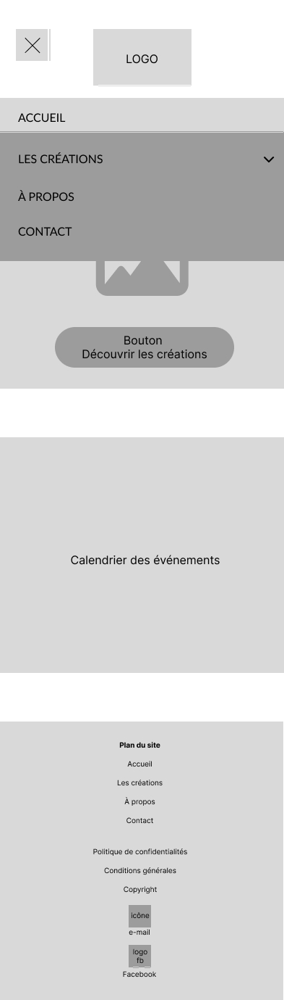
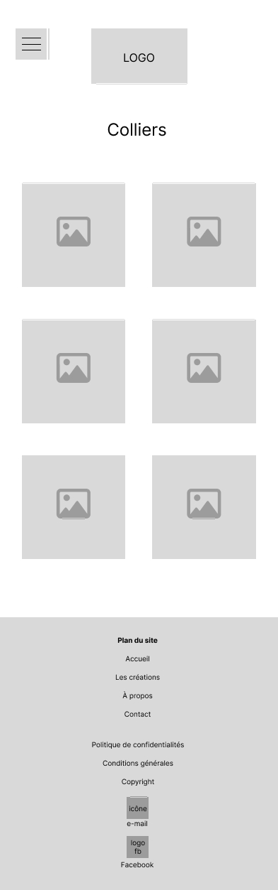
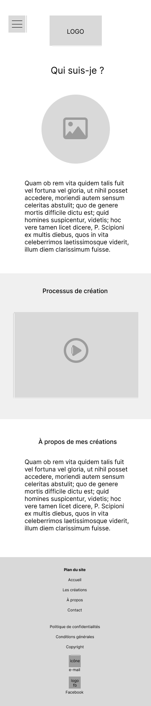
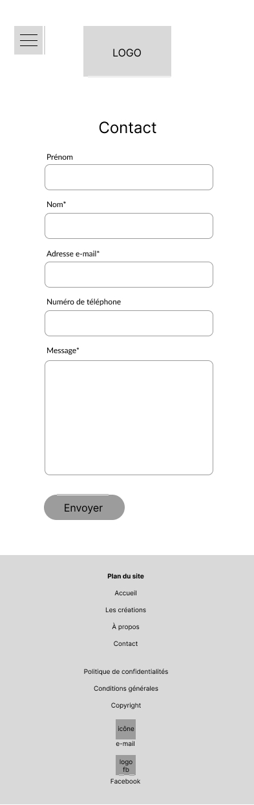
Maquettes
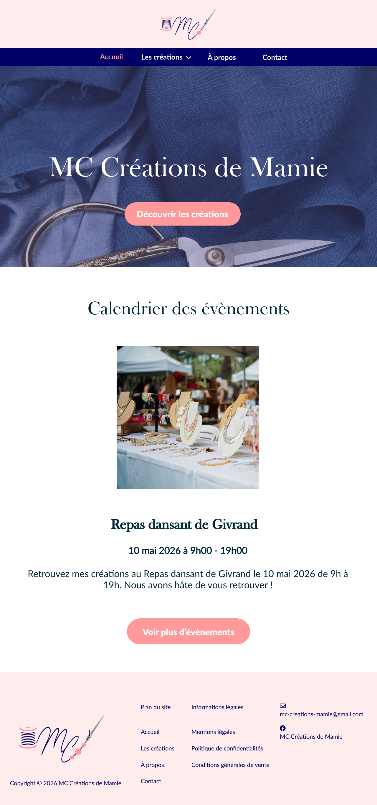
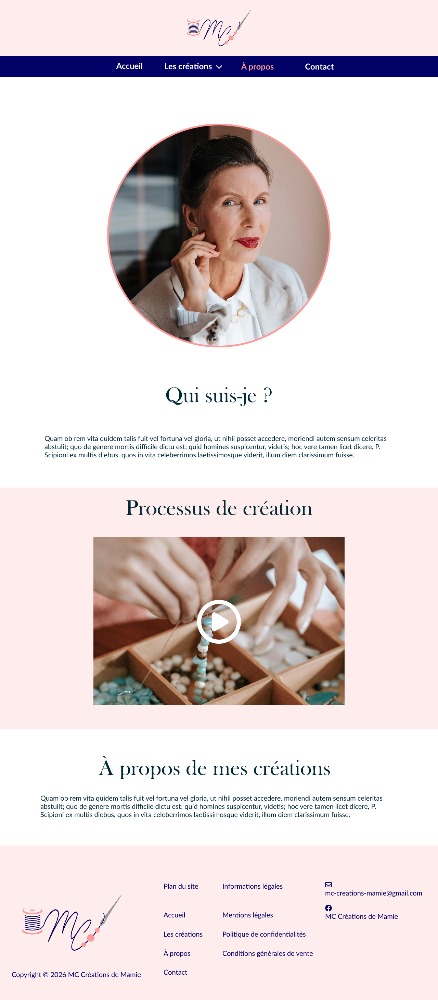
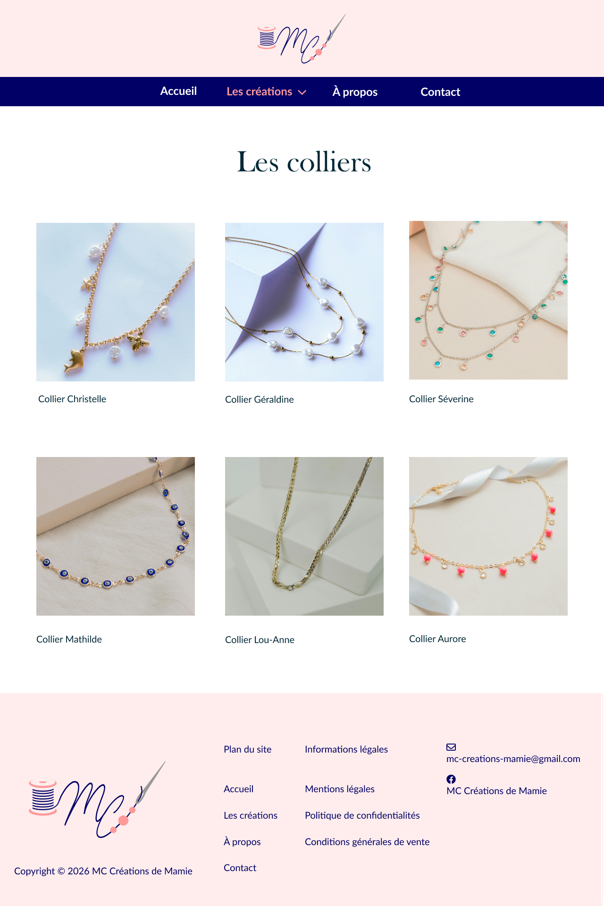
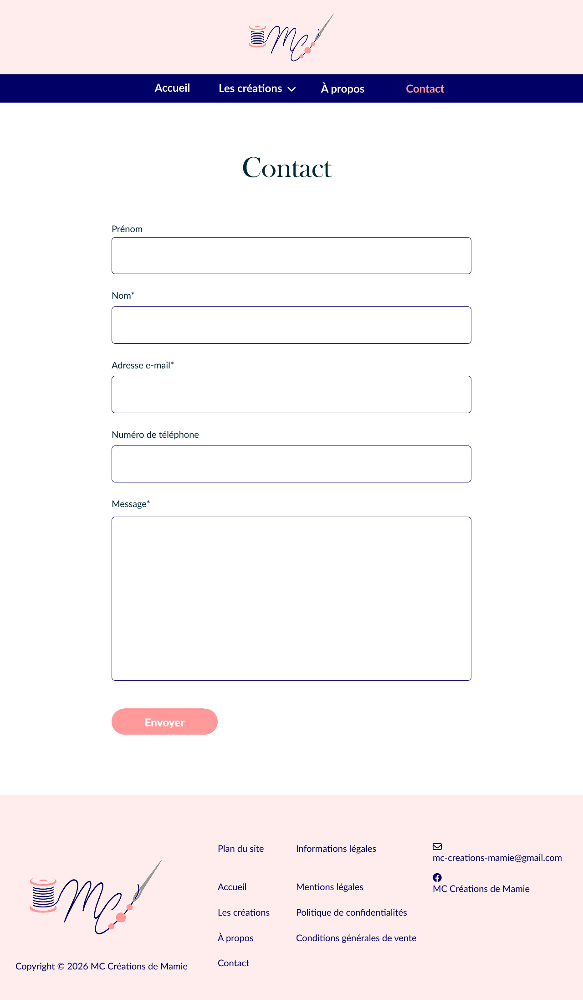
Ouvrir le prototype interactif Figma Desktop ↗
Site Vitrine
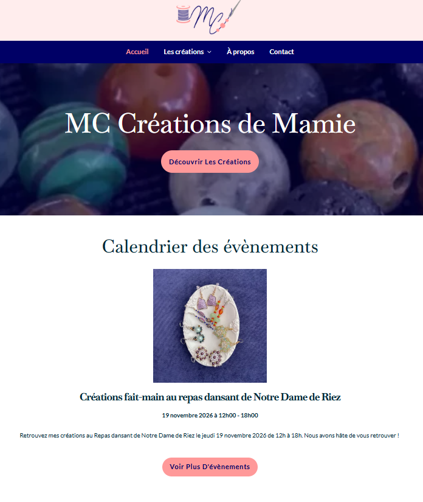
Accueil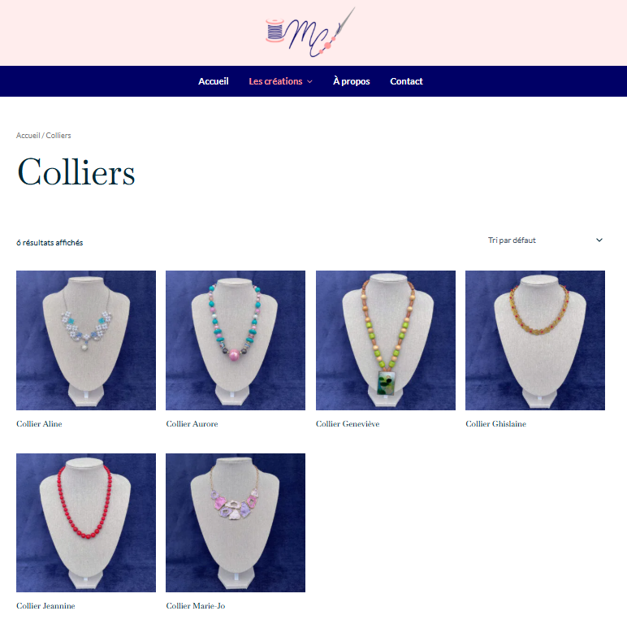
Page ProduitSupport de
communication
La carte de visite apparaît comme le choix le plus pertinent avec les besoins de l'artisane. L'objectif principal étant de promouvoir le site internet de la créatrice, elle devient alors un véritable pont entre la rencontre physique et la découverte en ligne. Avec son QR code intégré, la carte de visite permet d'accéder directement au site web. Par souci d'accessibilité, l'URL du site est également inscrite en toutes lettres.
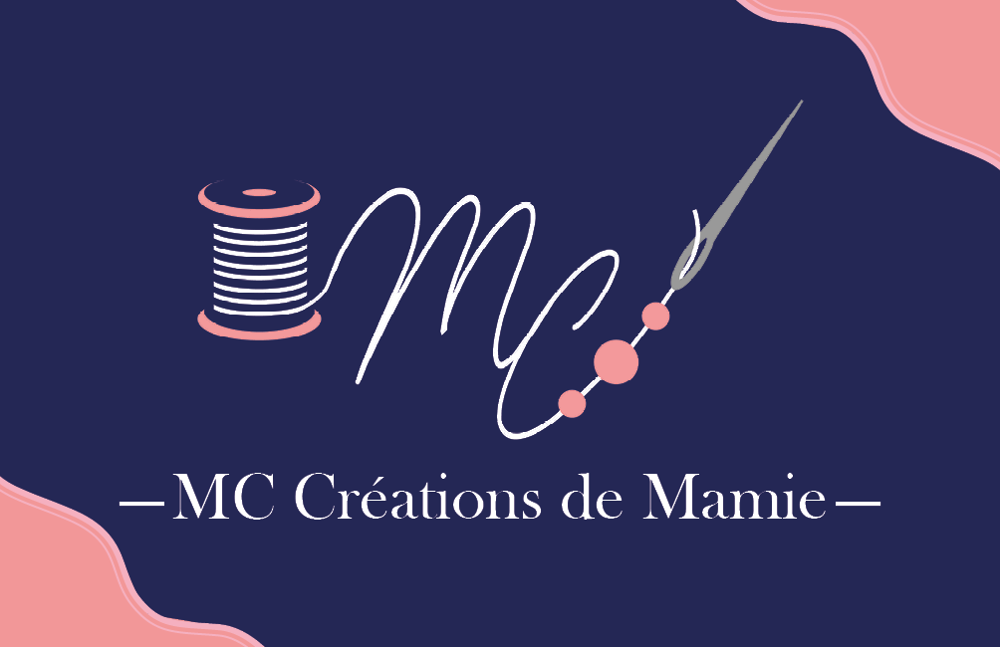
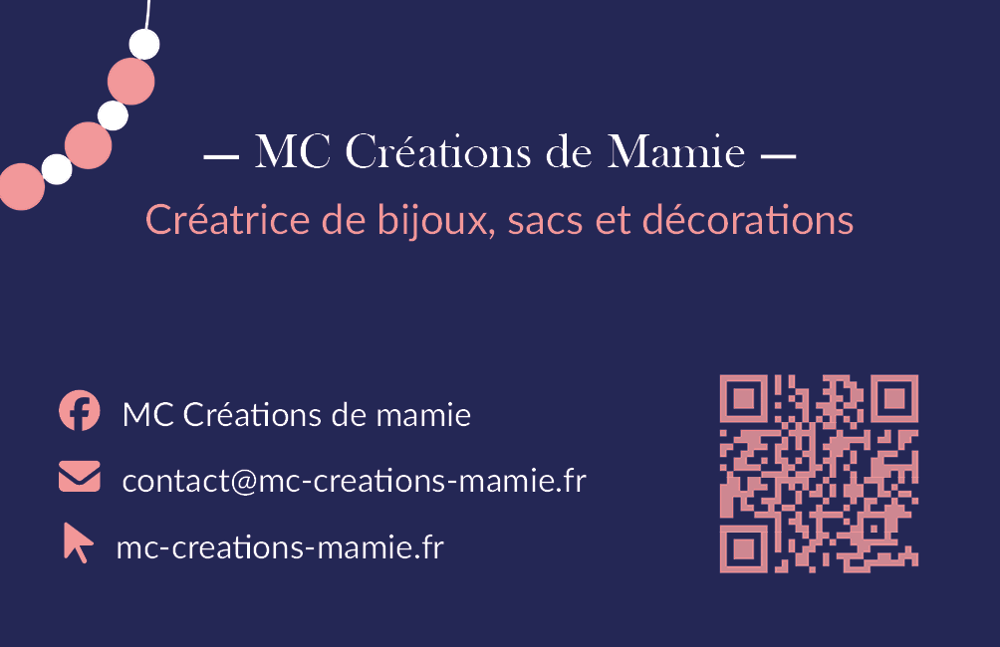
Mockup
J'ai réalisé des mockups avec Photoshop pour permettre à la créatrice de visualiser concrètement le rendu final et l'aider à se projeter.

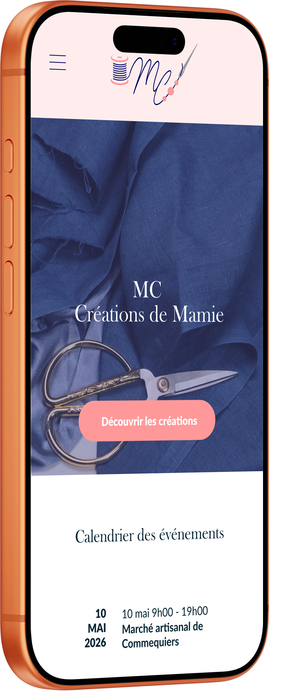
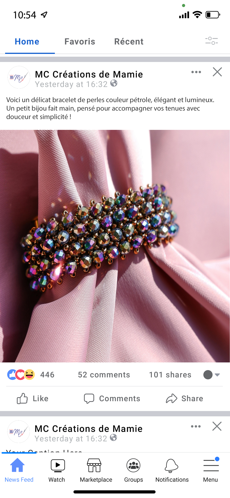
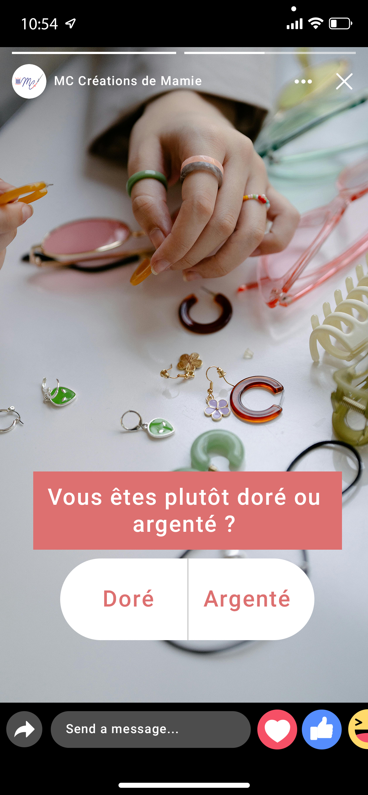